Chloë Danguy - PORTFOLIO
Chloë Danguy - PORTFOLIO
Chloë Danguy - PORTFOLIO
Chloë Danguy - PORTFOLIO

Film réalisé dans le cadre du festival d'1 jour organisé par l'équipée à partir d'une archive INA drômoise. La contrainte du marathon consistait à réaliser le film en 5 jours, sur l'application Callipeg.
Encadrement artistique : Nicolas Hu
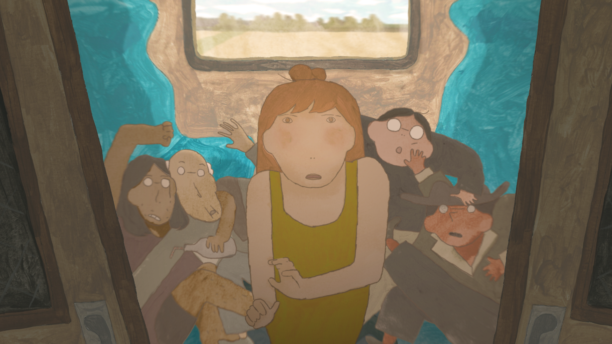
Adaptation de la Première Page du livre éponyme de Sarah Bernhardt. Le film a été réalisé dans le cadre de la collection Première page à l'Incroyable Studio.
Production : Scalae Production
Musique : Pablo Pico
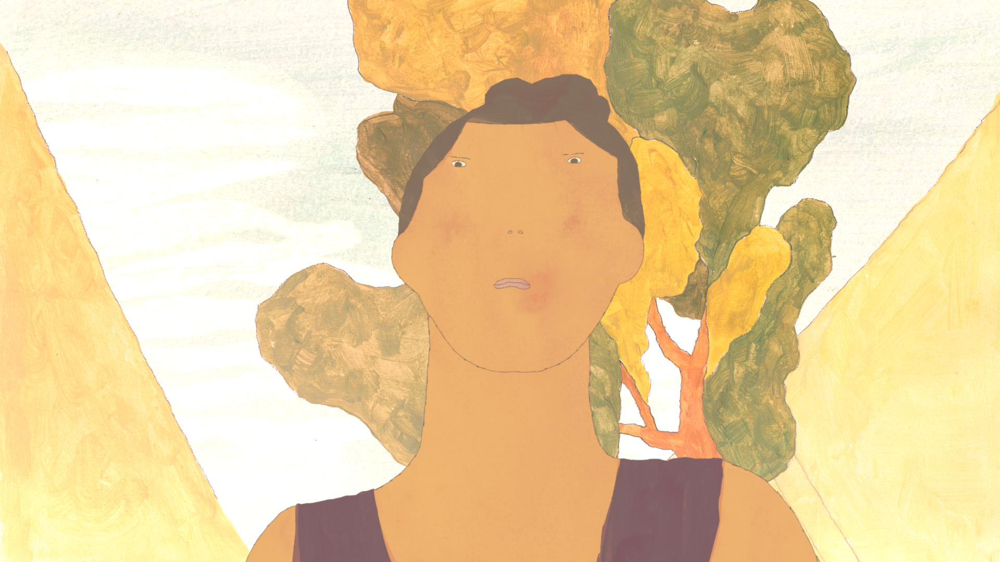
Film de fin d'étude réalisé à La Poudrière.
Musique : Christine Webster
Sélections : Carrefour du cinéma d'animation(2024)/Festival de Clermont Ferrand(2025)/Anima Bruxelles(2025)/Ciné court animé Roanne(2025)/FICAM Meknes(2025)/Fureur d'Avril(2025)
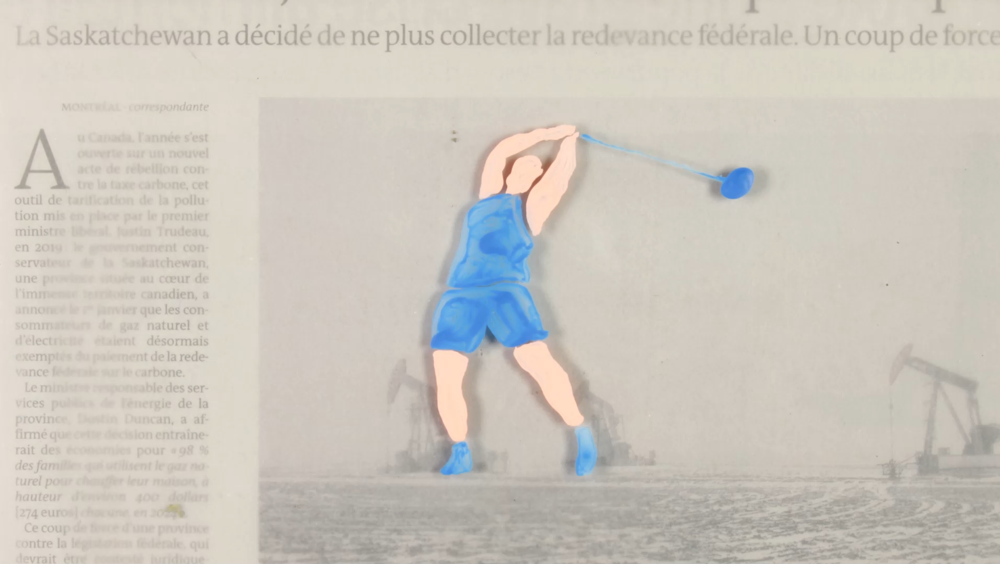
Film de commande pour les JO
Commanditaires : France Télévision
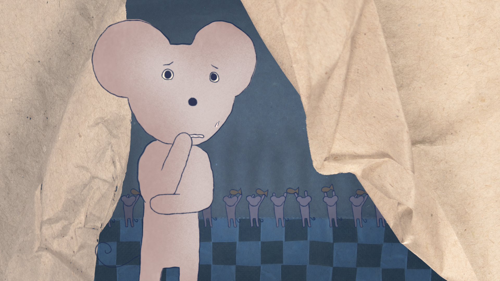
Réalisé dans le cadre des espoirs de l'animation pour la chaine Gulli.
Musique : Serge Besset
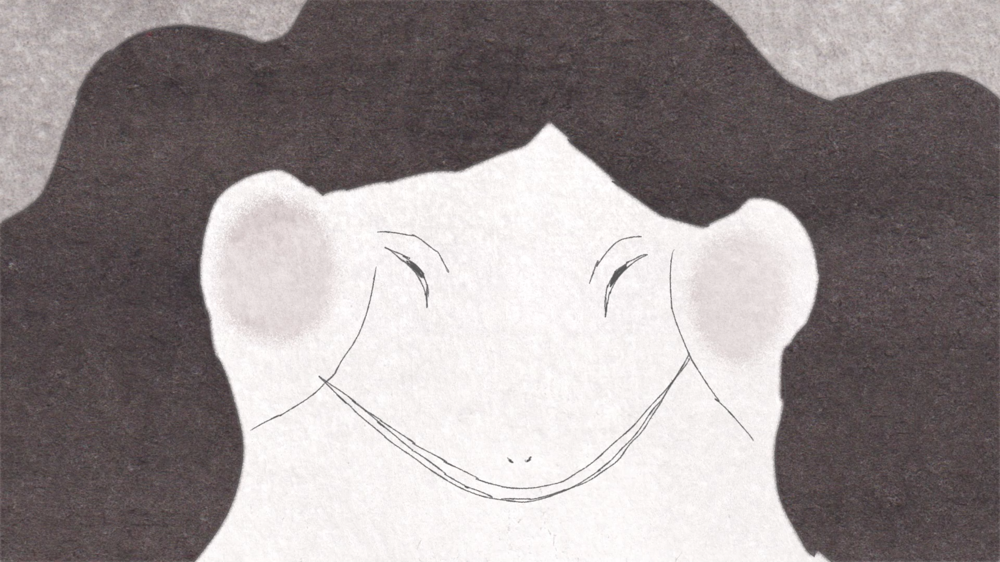
Film d'atelier musique à l'image en partenariat avec le conservatoire de Lyon
Musique : Antonin Browne
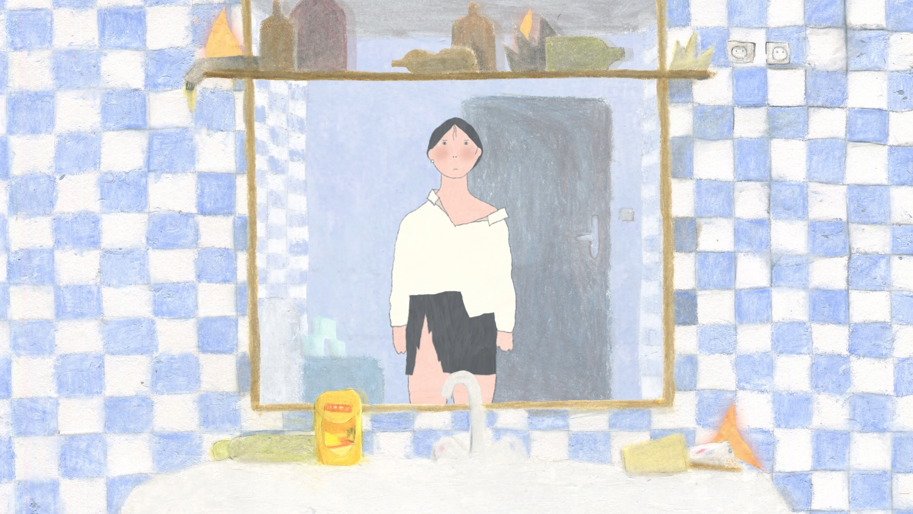
Musique : Anne Sylvestre
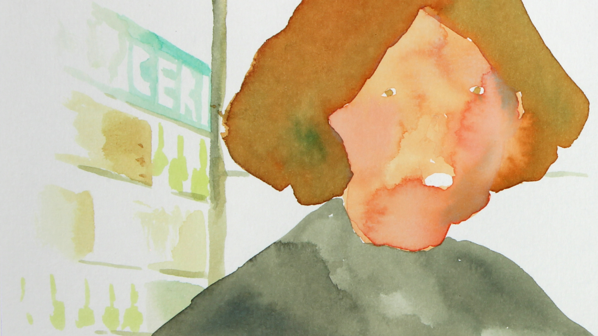
Musique : Roméo Monteiro
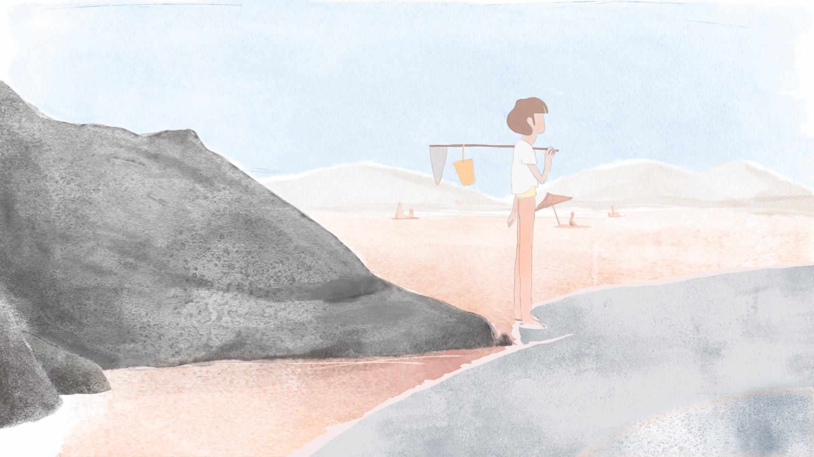
Film de fin d'étude réalisé à L'EMCA.
Musique : Yacine Synapsas
Sélections : Festival de Leucate(2022)/Icona(2022)
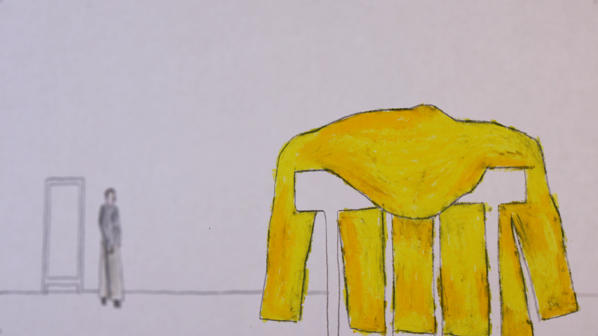
Réalisé dans le cadre du dispositif Expérience Animée : Réaliser un film traitant des addictions et des premières experiences qui surviennent à l'adolescence.
Psychologue à l'origine du projet : Nathalie Petit
Sélections : LiftOff Session(2021)/Kinovertical(2021)/Anilogue(2021)/Festival de Poitier(2022)
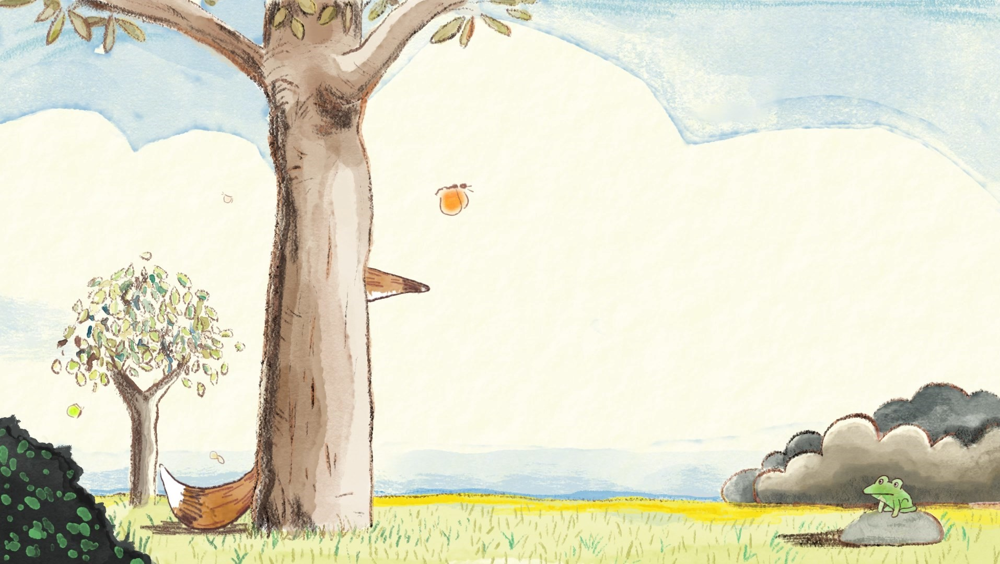
Adaptation du livre de Claude Boujon dans le cadre d'un partenariat Ecole des loisirs/Folimage/EMCA
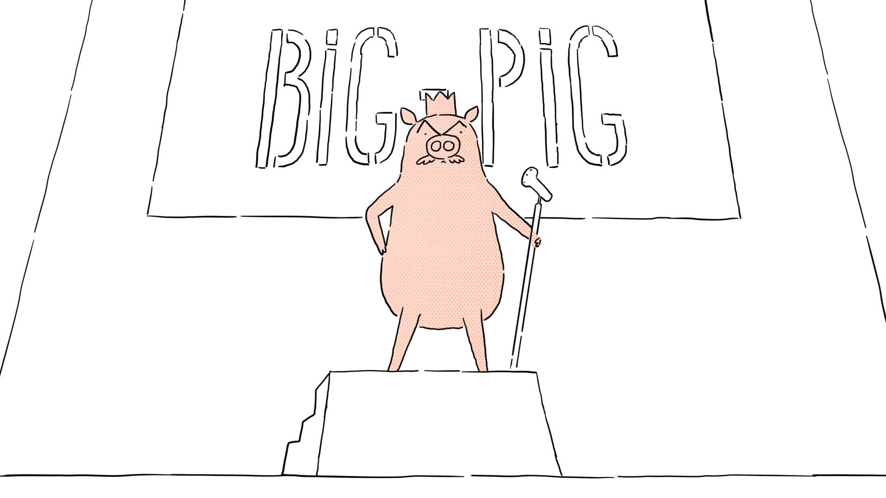
Réalisé en 10 jours lors d'un atelier à l'EMCA
Encadrant : Alexandre Le Marchand
Sélections : Fluxus Animation film festival(2022)/Anilogue(2022)/Hsin-Yi Children's Animation Awards(2022)/Festival très court(2023)
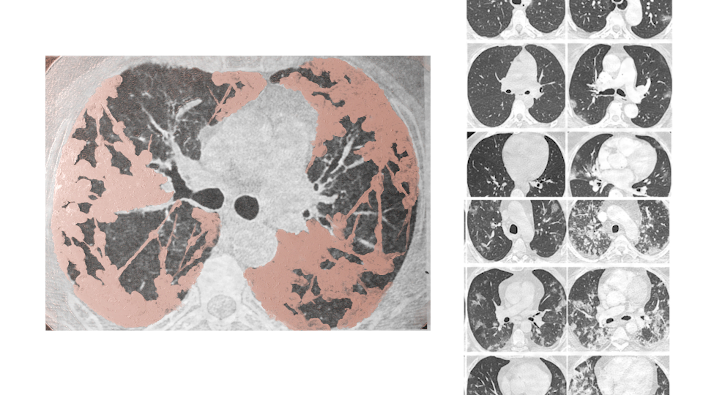
Documentaire animé à la demande de l'Hopital Bichat de Paris. Le film devait présenter une facette de l'expérience du Covid au sein de l'hopital en ce tout début de crise (avril 2020), nous avons choisi d'interviewer des patients qui ont été plongés dans un coma artificiel. Ce parcours médical était encore peu médiatisé et les patients étaient encore perçus comme des pestiférés par le grand public.
Encadrante : Marie Doria
Commanditaire : Hopital Bichat, Paris
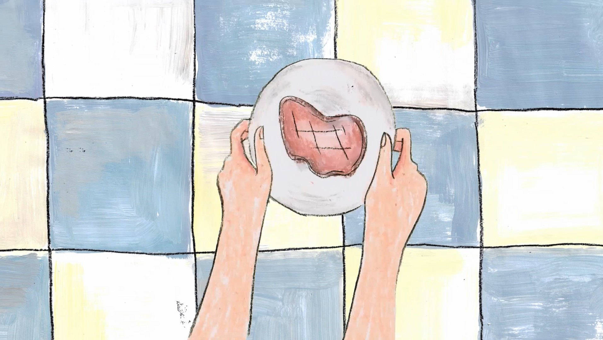
Premier film étudiant, EMCA
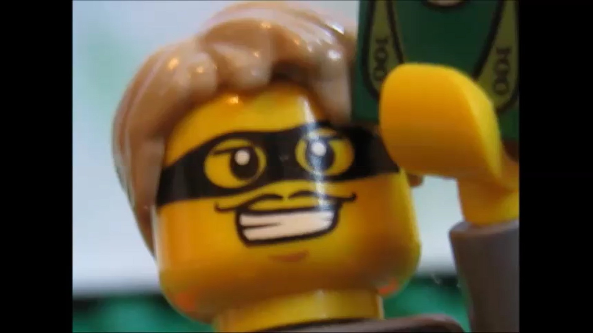
Film de bébé de quand j'avais 14 ans